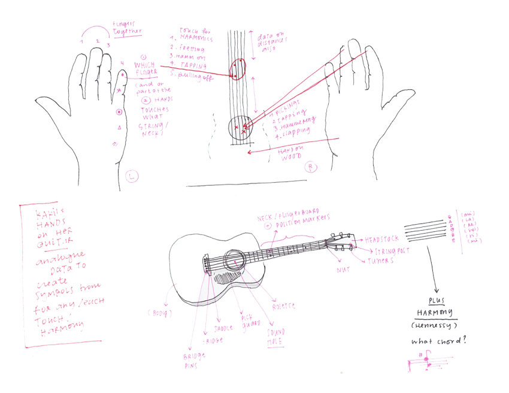
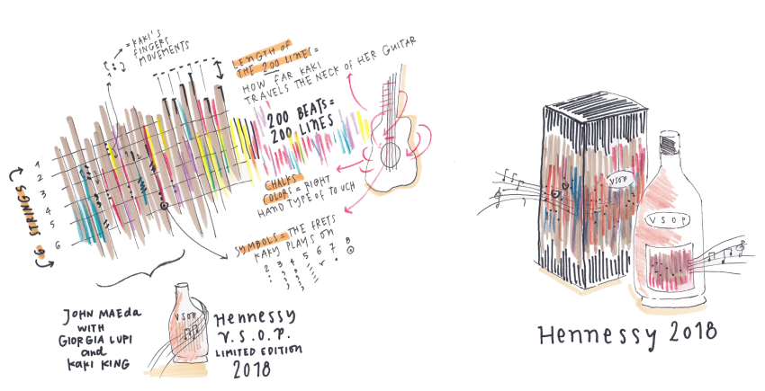
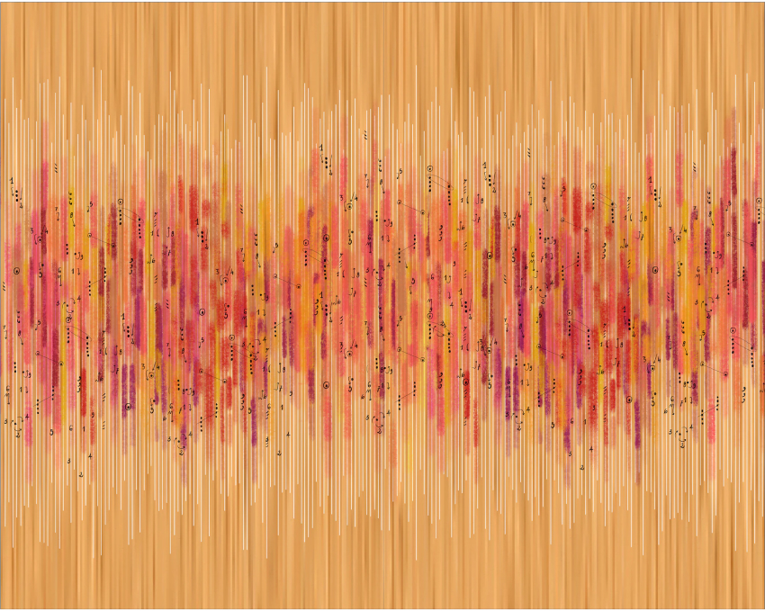

Hennessy, the world-famous cognac producer, developed a challenging creative brief for the two-hundredth anniversary of its V.S.O.P. limited edition in 2017: translate the harmony of the blend of over 60 eaux-de-vie and the story of its making into a unique brand identity.
Hennessy has a history dating back to 1765 when Irishman Richard Hennessy founded the company. Initially an eaux-de-vie trading business, Hennessy is now the most successful cognac exporter in the world and operates as part of the Louis Vuitton Moët Hennessy Group. Hennessy’s V.S.O.P. cognac boasts a natural balance of strength and smoothness and a complex texture that is hard to describe in words. The quality of the brand and product called for an identity design process that would be equally sophisticated.
Pentagram partner Giorgia Lupi, then at Accurat, worked with computer design and technology pioneer John Maeda and experimental musician Kaki King to create a distinctive visual identity inspired by the exacting and artful process of making V.S.O.P. cognac. With a nod to the role of the Hennessy Master Blender, whose job is to maximize the potential of dozens of eaux-de-vie by blending them to their fullest expression, together the three innovators made their own blend of original elements for the anniversary identity design.
John envisioned a dialogue between the artists’ hands: Kaki’s musical talent and Giorgia’s gift for visualizing and humanizing data playing off one another. This dynamic collaboration would result in the base artwork for the brand identity and symbolize the craftsmanship that goes into creating V.S.O.P.
During an immersive three-day trip to the town of Cognac in France, Kaki started to compose and record musical phrases that embodied the spirit of what she saw, learned and felt at Hennessy’s distillery. Upon Kaki’s return to New York, Kaki and Giorgia analyzed the spontaneous musical creation and turned it into data by observing both the digital readout of the 200-note song (one note per year) and how Kaki’s hands moved on the strings and across the fretboard. Giorgia translated this very human set of data into a visual code of lines and colors that retained the flavor of the musical composition and the Cognac experience.
To produce a more layered rendition of the history and texture of V.S.O.P., Giorgia drew from a unique element of the Hennessy heritage. The Cognac makers mark their barrels of brandy with a signature chalk calligraphy. The instructions for drawing this calligraphy inspired Giorgia to create visual elements that represent the way Kaki plays the guitar.
Hand gestures Kaki used in the “Celebration of Mastery” composition, such as frets, slides, taps, hammer-ons, and pull-offs, each became different strokes in the cursive alphabet. Giorgia connected these across multiple beats, resulting in sinuous lines and arcs similar to those appearing in V.S.O.P.’s brand signature. From the data and numbers derived from real people, places, flavors, sounds, and stories, the team generated a new work of art and a unique visual expression celebrating V.S.O.P. cognac.
In the final renderings used on packaging and advertising, the identity design created for the two-hundredth anniversary reflect the human artistry and craftsmanship that have made Hennessy V.S.O.P. an enduring global brand.

Giorgia Lupi analyzed Kaki King’s unique style of guitar playing to develop the visual language.

Aspects of the music-making were deconstructed into data, then represented in color and form.
The creative brief: translate the harmony of the blend of over 60 eaux-de-vie and the story of its making into a unique brand identity.

The playing of 200 notes, one for each year, became a tapestry of data-driven colors and notations.